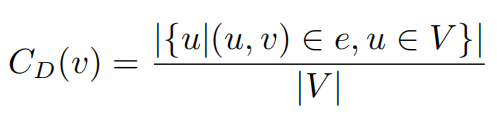
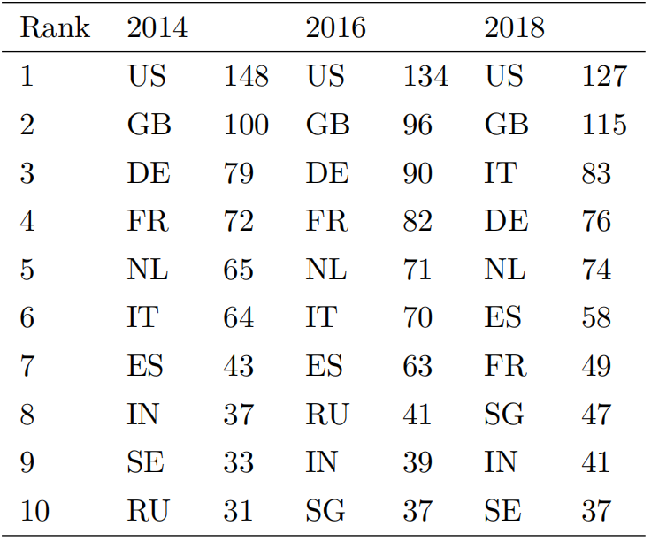
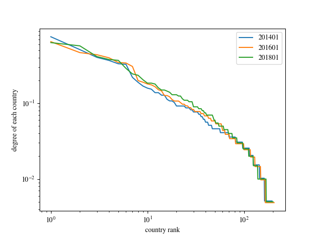

基于度中心性的关键节点识别
度中心性是衡量节点的关键程度的最直接的度量，与第一章的做法相同，我们利用每个节点的度数来进行排序。为了能够进行比较，我们将一个国家的度数用下面的公式来计算：

其中，`| V |`代表图中的节点个数。显然对于所有的节点`v`都有`0 \leq C_{D}(v) \leq 1`。

上表展示了度数最高的十个国家，可以看出美国、英国、法国和德国一直都很重要。

上图展示了从2014年到2018年各个国家的度中心性。我们可以看出在将国家按照度中心性从大到小排序后的曲线在这些年都没有太大的变化。